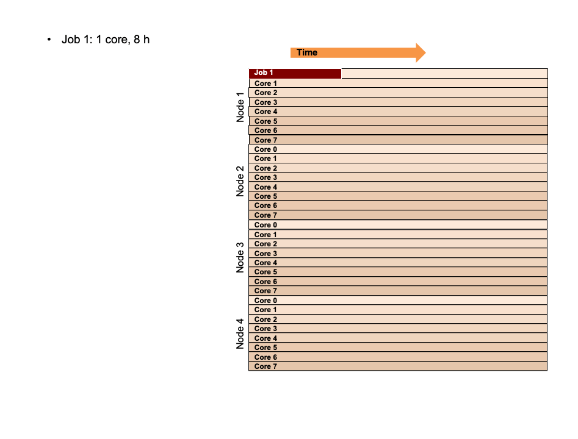

Batch system concepts¶
What is a batch system?¶
A batch system provides a mechanism register (submit) your computational jobs (program or group of programs) for execution by the system. You have to describe your job to the system, which includes the resources required, such as the number of nodes, the number of cores and the job time. The batch system may run you job directly or execute it at a later stage, depending on a variety of reasons.
In the following animation we illustrate how a batch system might execute jobs. Imagine a system with 4 nodes, 8 cores each.

Description of the animation¶
- We start with an empty cluster
- First job gets submitted, asking 1 core for 8 hours
- The job starts executing on core 0 of the first node
- Second job, asks for a full node with 8 cores for 4 hours
- System executes the job on node 3
- Third job, asks for 2 nodes, 8 cores each for 8 hours
- System executes the job on nodes 2 & 4
- Fourth job, asking 3 nodes, 8 cores each for 3 hours
- Insufficient idle nodes at this time
- System determines that 3 nodes are idle once job 3 finishes
- System schedules job four to be run on nodes 2, 3 & 4 once job 3 has finished
- Fifth job, asking for 1 node with 8 cores for 12 hours
- No idle node available a this time
- System determines that node 1 is idle once job 1 finishes
- System schedules job 5 to be run on nodes 1 once job 1 has finished
- Sixth job, asking for 2 nodes, 8 cores each for 4 hours
- The job has higher priority than jobs 4 & 5
- If possible it should start before jobs 4 & 5
- System re-schedules jobs 4 & 5 for a later time
- System schedules job 6 to be run on nodes 1 & 3 once job 1 has finished
- Job 5 gets re-scheduled to run on node 2
- Job 4 gets re-scheduled to run on nodes 1, 3 & 4
- The expected start time of jobs 4 & 5 is pushed back in time due to the submission of job six
- Seventh job, asking 1 core for 6 hours
- While there are currently enough idle cores, the job can not be started since there are less then 6 hours until the start of job 6
- Job 7 gets scheduled to execute after jobs 6 & 4 are finished
- Eighth job, asking 4 cores for 2 hours
- Due to the short job time of 2 hours, the job starts directly
- It is finished before the scheduled start time of job 6
- It starts executing before the jobs 4, 5, 6 & 7, which were submitted earlier
- This is called backfill
- This is not to be confused with priority - this job started because a slot was available to run it now.
Key points¶
- The submitted job joins a waiting queue
- Jobs start executing once it is their turn
- The anticipated start time can move forward and backward depending on other users actions
- The description of the computational work is typically done by a script (this course)
Important
- Computational work needs to be submitted using the job scheduler
- You need to describe the computational work at the time of the job submission, since you might not be there (out of hours) once your job starts executing
Comment on priorities¶
The priority of a jobs is affected by a number of factors. These may include:
- The time the job has already spent in queue
- How many resources (e.g. CPU hours) the project has used in relation to the allocated resources
System administrators may adjust the batch system rules to ensure all user group can run jobs in line with the resources allocated to the project.